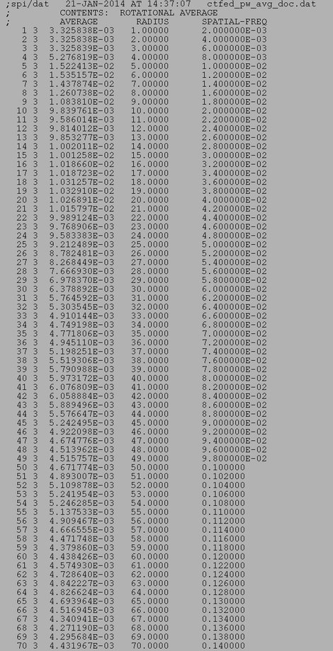
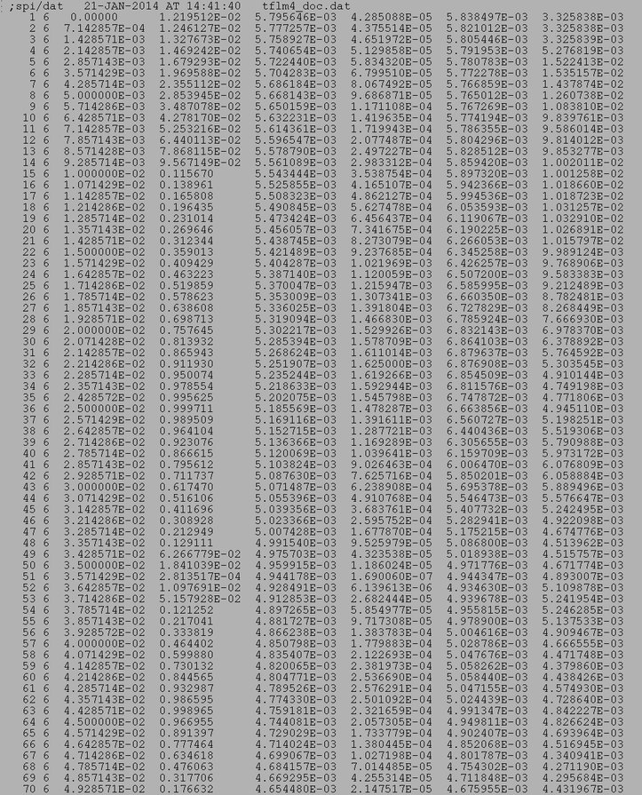
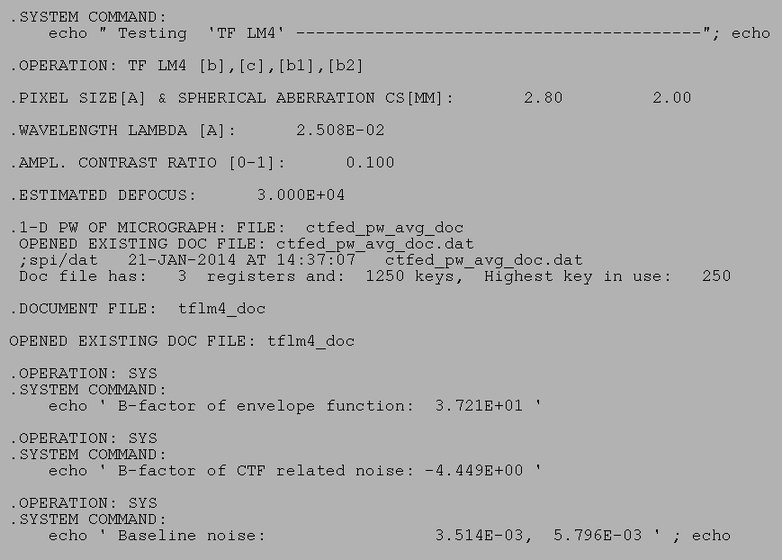

| .OPERATION: | TF LM4 [b],[c],[b1],[b2] | ; Estimate image formation parameters |
| .PIXEL SIZE [A] & SPHERICAL ABBERATION CS [MM]: | 2.8, 2 | ; Pixel size, Spherical aberration |
| .WAVELENGTH LAMBDA [A]: | 0.0197 | ; Electron wavelength |
| .AMPLITUDE CONTRAST RATIO [0-1]: | 0.1 | ; Ampl. contrast ratio |
| .ESTIMATED DEFOCUS: | 30000 | ; Defocus |
| .MICROGRAPH 1-D POWER SPECTRUM DOC FILE: | ctfed_pw_avg_doc | ; 1D power spectrum doc file (input) |
| .DOCUMENT FILE: | tflm4_doc | ; Doc file (output) |
| INPUT POWER SPECTRUM DOC FILE (portion) |
|---|
|  |
| ctfed_pw_avg_doc |
| OUTPUT DOC FILE (portion) |
|---|
|  |
| tflm4_doc |
| RESULTS FILE |
|---|
|  |
| tflm4_resu |